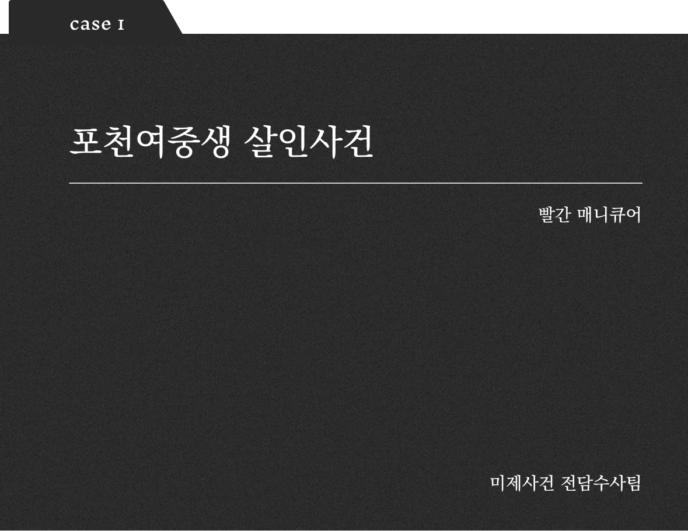
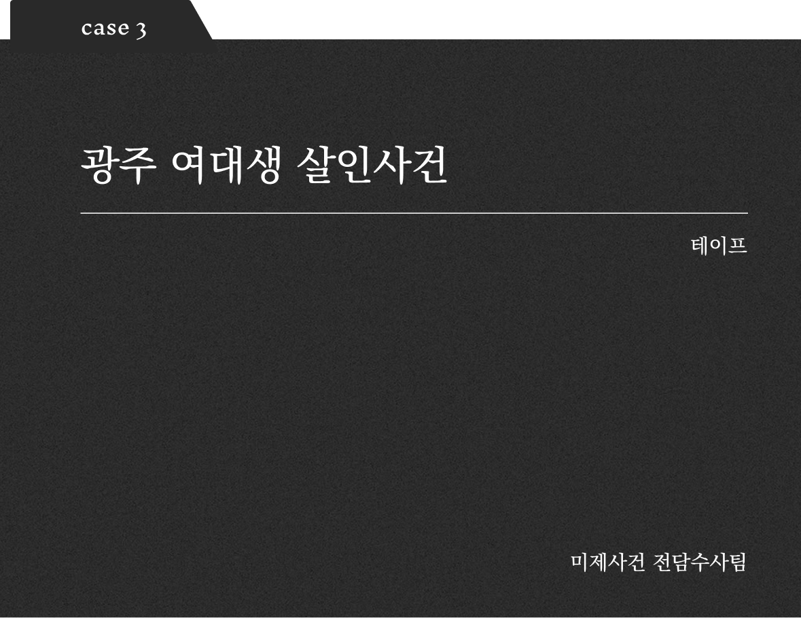

본 사이트는 실제 미제 사건을 기반으로 구성되어 있습니다. 민감한 내용이 포함될 수 있으니 주의해주시기 바랍니다.
이 웹사이트는 1990년대 컴퓨터 화면을 재현한 형식으로, 사용자가 직접 미제 사건과 관련된 단서와 정보를 수집할 수 있도록 설계되었습니다.
당신은 지금 한 대의 오래된 컴퓨터 앞에 앉아 있습니다. 마치 수사관처럼 컴퓨터를 클릭하며 사건 파일을 열고, 단서를 찾고, 조각을 맞추어 나가는 방식으로 사건을 추적하게 됩니다.
실제 수사처럼, 여러 자료를 비교하고 추리하면서 사건의 실체에 접근해보세요.